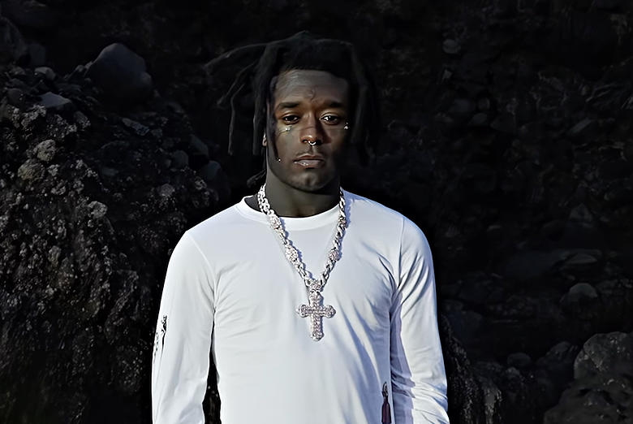

Symere Bysil Woods, known professionally as Lil Uzi Vert, has emerged as one of hip-hop's most distinctive voices and eccentric personalities. Since breaking through in 2016, Uzi has blended trap, emo, pop-punk, and alternative rock influences to create a sound uniquely their own, earning them a devoted following and critical acclaim.
Uzi's career began in Philadelphia, where they gained local attention through mixtapes Purple Thoughtz Vol. 1 and The Real Uzi. Their breakthrough came with 2015's Luv Is Rage mixtape, followed by Lil Uzi Vert vs. the World and The Perfect LUV Tape in 2016.
The release of "XO Tour Llif3" in 2017 catapulted Uzi to mainstream success. The emotional emo-trap anthem—with its memorable "all my friends are dead" hook—reached #7 on the Billboard Hot 100 and set the stage for their debut album, Luv Is Rage 2, which topped the Billboard 200.
What followed was a period of label disputes and delays before the long-awaited Eternal Atake finally arrived in March 2020. The album, which debuted at #1, showcased Uzi's evolution with its sci-fi concept and diverse production. That same week, they released the deluxe edition Lil Uzi Vert vs. the World 2, effectively dropping two albums in quick succession.
Recent projects include collaborative album Pluto x Baby Pluto with Future, the experimental Red & White EP, and 2023's Pink Tape, which continued their genre-bending approach while incorporating more rock and hyperpop elements.
Uzi's music defies easy categorization, blending melodic trap with influences from alternative rock bands like Paramore and Marilyn Manson. Their distinctive high-pitched delivery and emotional vulnerability have expanded hip-hop's expressive range.
Visual presentation is equally important to Uzi's artistry. Their fashion sense—mixing high fashion with punk, goth, and anime influences—has made them a style icon. In 2021, they famously had a $24 million pink diamond implanted in their forehead, further cementing their reputation for eccentric self-expression.
Uzi's embrace of androgyny and fluid self-presentation has also been influential, with them often using they/them pronouns and challenging hip-hop's traditional gender norms through fashion and artistic choices.
As a leading figure in SoundCloud rap, Uzi helped revolutionize how hip-hop is distributed and discovered. Their success demonstrated how artists could build massive followings through digital platforms, bypassing traditional industry gatekeepers.
Uzi's genre-bending approach has influenced countless artists who followed, blurring lines between trap, emo, rock, and electronic music. Their emotional openness about topics like depression, heartbreak, and substance abuse helped normalize vulnerability in a genre often focused on projecting strength.
Their distinctive dance moves, particularly the "shoulder roll," became cultural phenomena, spreading through social media and further cementing their influence beyond music.
With multiple platinum records and billions of streams, Lil Uzi Vert has proven that artistic authenticity and commercial success aren't mutually exclusive. Their willingness to experiment with sounds, visuals, and identity has expanded the possibilities for hip-hop artists who don't fit traditional molds.
Uzi's influence extends to a new generation of artists who blend genres, embrace emotional vulnerability, and build careers through digital platforms rather than traditional channels. Their alien persona—complete with references to extraterrestrial origins—has created a mythological aspect to their artistic identity that resonates in an era of personal branding.
As they continue to evolve, Lil Uzi Vert remains one of modern music's most unpredictable and fascinating figures—a true original in an industry often defined by imitation.
Lil Uzi Vert (Wikipedia) | Lil Uzi Vert discography (Wikipedia) | Billboard artist page | RIAA certifications | Pitchfork artist reviews